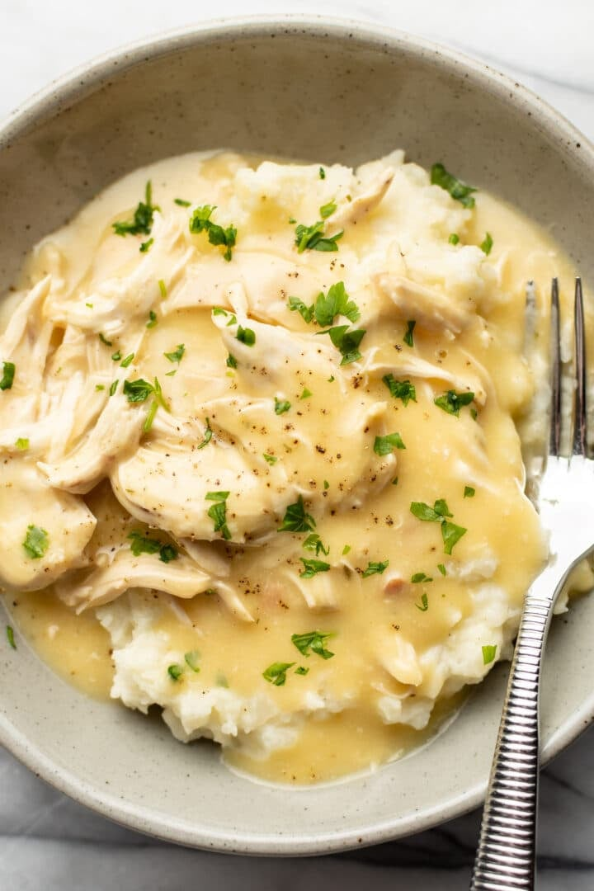

Chicken and Mashed Potatoes

This shredded chicken and gravy recipe is a budget-friendly and ridiculously comforting homestyle meal! It's a family favorite with just a few ingredients.
Ingredients
Boneless skinless chicken breasts
Cream of chicken soup
Chicken gravy mix
2lbs of potatoes, Yukon Gold or mixed.
Butter
Milk
Salt and Pepper
Chicken Instructions
Place chicken breasts, cream of chicken soup, and chicken gravy mix into instant pot
Cook on high pressure for 20 minutes
Salt and Pepper to taste
Potatoes Instructions
Chop potatoes into small 1 inch chunks
Place in pot above stovetop, fill with water until 1 inch above potatoes
Cook on high until water is boiling, then turn to medium heat until potatoes are soft
Drain water
Mash potatoes to desired consistency, then mix in 2tbs of butter and milk at small intervals until desired consistency.